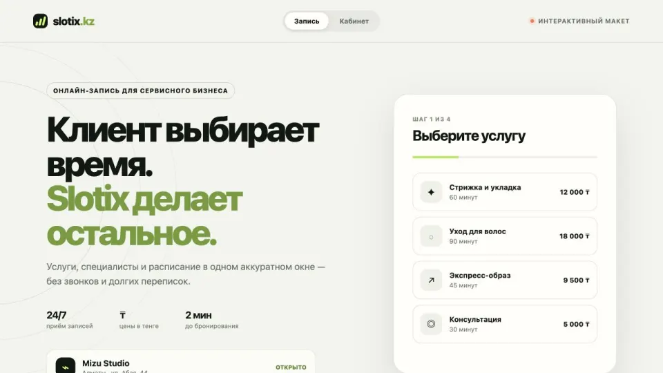

Booking concept · Live demo
Slotix KZ: онлайн-запись без звонков и переписок.
Демонстрационное решение для салонов и сервисных компаний: клиент выбирает услугу, специалиста и время, а администратор видит записи в отдельном кабинете.

Задача
Что нужно было показать
Показать полный путь записи в одном интерфейсе: от выбора услуги до управления расписанием. Макет должен работать без регистрации и внешнего backend, чтобы его можно было сразу проверить.
Решение
Как устроен концепт
Созданы клиентский сценарий бронирования и административная часть с услугами, расписанием, поиском и статусами. Демонстрационные изменения сохраняются локально в браузере.
User flow
Сценарий от входа до результата
- 01
Клиент выбирает услугу и подходящее время.
- 02
Контакты и запись сохраняются в интерфейсе макета.
- 03
Администратор видит расписание и может управлять услугами.
Решения
Почему интерфейс устроен так
- Короткий путь записи без регистрации
- Расписание как главный экран администратора
- Разделение клиентского и рабочего сценариев
Границы
Что этот кейс не обещает
- Данные хранятся только в браузере
- Нет production-авторизации и разделения прав
- Оплата и внешние календари не подключены
Что реализовано
- Выбор услуги и специалиста
- Свободные временные слоты
- Подтверждение записи
- Поиск и статусы
- Управление услугами
- Локальное хранение demo data
Технологии
Next iteration
Что потребуется для рабочей версии
- Добавить API, базу данных и роли
- Подключить уведомления и календарь
- Настроить правила отмены, оплаты и повторных визитов
Похожие решения
Этот кейс показывает один конкретный сценарий. В каталоге решений собраны варианты для заявок, записи, торговли, CRM и AI-помощников.